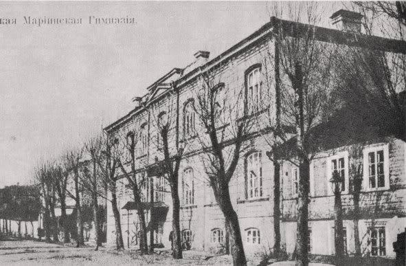
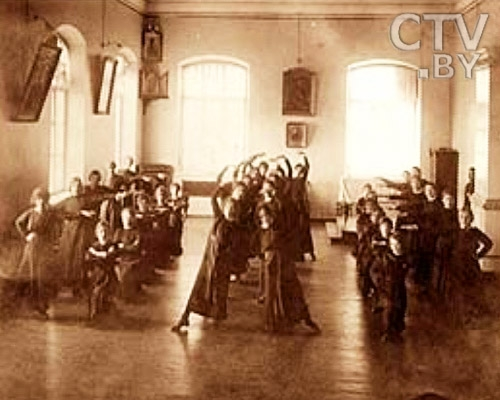
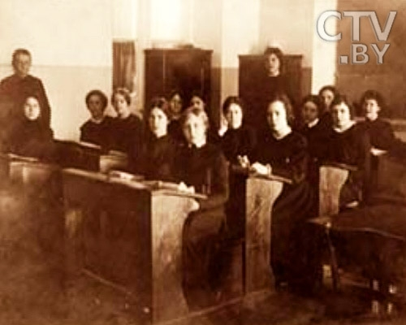
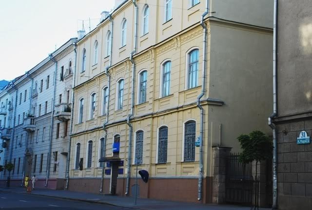

The building was erected among the existing buildings at Podgornaya, 37 and opened in 1899. Originally it was a two-storey building with a basement.
Studying consisted of a preparatory stage, seven basic years and the eighth year - pedagogical. The students had the following subjects: Russian language and literature, foreign languages, physics, the law of God, drawing, gymnastics, singing, dancing, needlework. Every morning, curtsy to the professors and then young students could begin their classes. A seventh grader could already teach elementary school students, and an eighth grader were able to apply for women's courses. In 1912 the gymnasium was attended by 560 pupils.
Minsk Women's Mariinsky gymnasium was one of the best among women's educational institutions of that time. The future People's Artist of the USSR L. I. Rzhetskaya; V. N. Pola, who later became the People's Artist of the BSSR; Irma Evnzen, an outstanding singer of folk songs, the first honored artist of the BSSR in the Republic, studied here. During the World War I, the gymnasium was transferred to Propoisk (Slavgorod), in 1917 – closed. In the 20s-early 30s the building belonged to the Polytechnic, from the mid 30s - to the state art gallery. The building itself looked somewhat different - the third floor was completed after the Great Patriotic War. Before the reconstruction of the building in 2011-2013 there was an automatic telephone exchange and the Communication Museum, now there is the Republican Unitary Enterprise National Traffic Exchange Center (K. Marx, 29).



